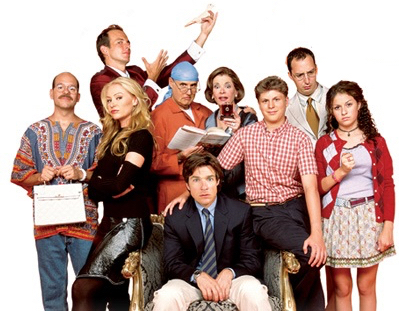

Yup, they screwed up... again. They need your money
because they spent all of theirs already.
Arrested Development is an American television sitcom created by Mitchell Hurwitz, which originally aired on Fox for three seasons from November 2, 2003, to February 10, 2006. The show follows the fictitious Bluth family, a formerly wealthy and habitually dysfunctional family. It is presented in a serialized format, incorporating handheld camera work and voice-over narration, as well as the use of occasional archival photos and historical footage. The show also maintains numerous running gags and catchphrases throughout each season, and the series as a whole. Ron Howard serves as both an executive producer and the series' uncredited omniscient narrator. Set in Newport Beach, California, Arrested Development was filmed primarily in Culver City and Marina del Rey.
After its debut in 2003, the series received widespread critical acclaim, six Primetime Emmy Awards, and one Golden Globe Award, and has attracted a cult following, including several fan-based websites. In 2007, Time listed the show among its "All-TIME 100 TV Shows"; in 2008, it was ranked 16th on Entertainment Weekly's "New TV Classics" list. In 2011, IGN named Arrested Development the "funniest show of all time". Its humor has been cited as a key influence on later single-camera comedy series such as 30 Rock and Community.
Despite critical acclaim, Arrested Development received low ratings and viewership on Fox, which canceled the series in 2006. Rumors of an additional season and a feature film persisted until 2011, when Netflix agreed to license new episodes and distribute them exclusively on its video streaming service. These episodes were later released on May 26, 2013. Netflix also commissioned a fifth season of Arrested Development, the first half of which premiered on May 29, 2018. (source)
It's a well written television comedy about a dysfunctional family.